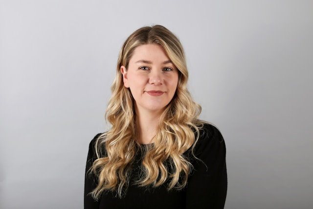
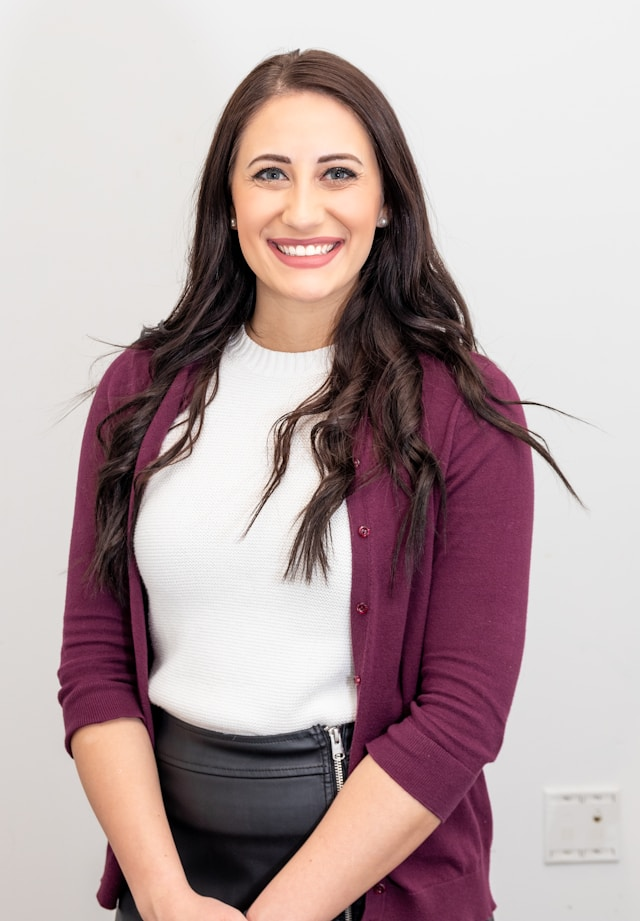
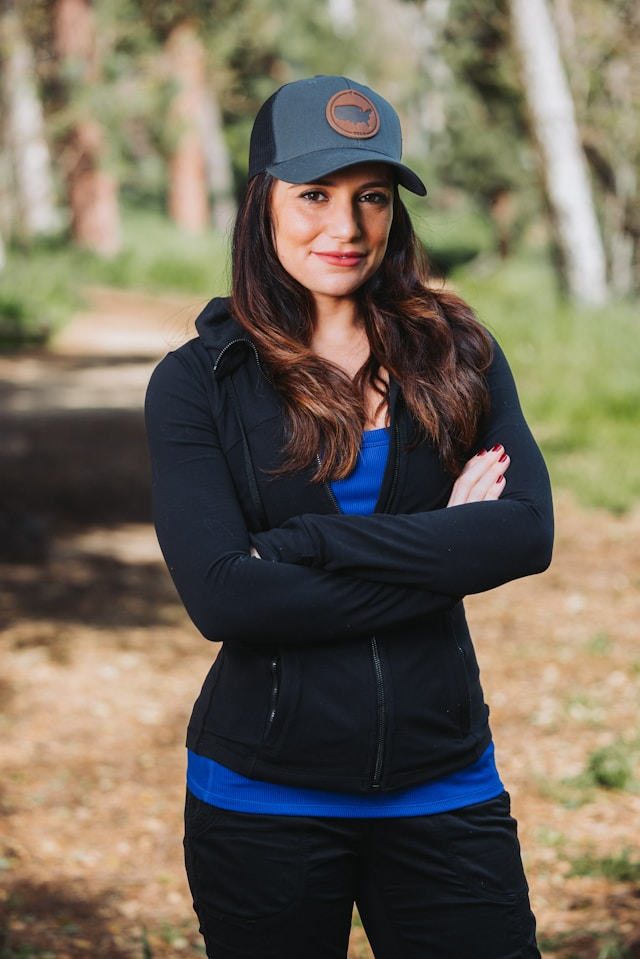

Equip de la Protectora
El nostre equip està format per professionals i voluntaris compromesos amb el benestar animal. Coneix-los!
Anna Martínez
Coordinadora General
Gestió de la protectora, supervisió de projectes i relació amb institucions.
Pere García
Veterinari
Atén als animals rescatats, assegurant la seva salut abans de l’adopció.
Laura Sánchez
Gestora d’Adopcions
Coordina adopcions i assegura que cada animal trobi la llar adequada.
Marc Vilanova

Coordinador de Voluntaris
Organitza torns, formacions i activitats per voluntaris.
Carla Gómez
Creadora de Contingut Multimèdia
Fotos i vídeos per donar visibilitat a la protectora.
Marta Ferrer

Especialista en Educació Animal
Realitza tallers i xerrades sobre el respecte als animals.
Sergi Vidal

Campanyes i Esdeveniments
Organitza activitats solidàries i mercats benèfics.
Eva Solé
Rescat i Emergències
Rescata animals en situacions de risc.